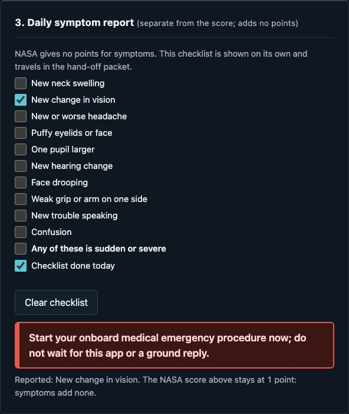

SIMULATION: NOT FOR OPERATIONAL MEDICAL USE · synthetic data
NASA Space Apps Challenge 2026 · Boston (Virtual)
VTE Watch
WHAT WE OFFER · THE IDEA
An onboard surveillance agent that checks more than NASA's clot-risk score: scan trends, symptoms and missing data. It flags concerns for the flight surgeon, even when the astronaut feels well.
Why look beyond symptoms? NASA reports that an in-flight jugular clot may have no symptoms and may be detected by ultrasound.
Team: Orbital Health Informatics
Members:{{MEMBERS}}
Challenge: Create Health Monitoring Software for Astronauts on Space Missions
1 / 7
SIMULATION: NOT FOR OPERATIONAL MEDICAL USE · synthetic data
The problem
8 of 31
astronauts had a left jugular vein flow anomaly in flight
NASA VTE report, July 2026
NASA published a VTE Risk Score for Astronauts: a table in a PDF.
Further from Earth, help arrives later.
Mars: communication latency "0-40 minutes".
Mars: "No evacuation capability".
Sources: NASA/SP-20260005258 REV1; OCHMO-TB-007
2 / 7
SIMULATION: NOT FOR OPERATIONAL MEDICAL USE · synthetic data
NASA's score, every point explained
Synthetic case C05
9 points
> 6 points = need clinical assessment
Every point shows NASA's rule, the input and the source.
The risk score is not a diagnostic test. New symptoms need their own assessment whatever the score.
3 / 7
SIMULATION: NOT FOR OPERATIONAL MEDICAL USE · synthetic data
Low score, new symptom: the app keeps them apart

Synthetic case C11
NASA score: 1 point, "no additional action".
Crew ticks new change in vision. It adds no points.
The checklist says, at once, onboard: "Start your onboard medical emergency procedure now; do not wait for this app or a ground reply."
The packet to the ground carries the score, its sources, the scan state and the symptom report.
Not a detector. No listed symptoms does not exclude thrombosis.
4 / 7
SIMULATION: NOT FOR OPERATIONAL MEDICAL USE · synthetic data
How the agent should work
The concept is continuous watch; the demo shows its rule-based first step.
1
Collect signals
Track scans, symptoms, labs and medication over the mission. Demo: synthetic cases only.
2
Check together
Apply NASA's score and guidance; check trends and missing, stale or conflicting data.
3
Flag what may be missed
Surface a worsening trend, symptom or data gap for review—even if the score is low.
4
Alert the surgeon
Concept: send a cited alert. Demo: create a review packet; the surgeon decides.
What exists today: fixed, source-linked rules on synthetic cases—not an AI model, live feed or validated clot detector. The demo creates a packet; it does not send a live alert.
5 / 7
SIMULATION: NOT FOR OPERATIONAL MEDICAL USE · synthetic data
The agent watches the trend, not only the score
Synthetic left IJV velocity observations from three examinations. The 10 cm/s reference is the NASA duplex criterion.
SYNTHETIC CASE C12
L+30: 17.5 cm/s, above NASA's line: the score adds nothing. The flight surgeon orders an extra scan.
L+47: 8.0 cm/s, below the line: NASA's +4 applies. The agent marks the trend DETERIORATING (forward flow at L+30, slow now; echo contrast grade 2→3) and builds the surgeon's review packet.
A review alert, not a diagnosis: slow flow is not proof of a clot, and normal flow does not exclude one.
Prototype limit: synthetic data, fixed rules, no live feed or AI model; trend rules are the team's, unvalidated; no detection performance measured.
Sources: NASA/SP-20260005258 REV1, p.20: “A case is defined as abnormal when mean peak velocity is less than 10 cm/s anterograde” · OCHMO-MTB-007/TB-007 · NTRS 20250002759
6 / 7
SIMULATION: NOT FOR OPERATIONAL MEDICAL USE · synthetic data
What it would take to trust the agent
Connect authorized, individual crew timelines: ultrasound, symptoms, labs and medication—not group averages.
Compare new measurements with the astronaut's own baseline and NASA guidance; flag the evidence for surgeon review.
Test against individual data and clinical outcomes; measure missed cases and false alerts before claiming detection.
NASA itself calls for improved in-flight detection and validation. Human clinicians remain responsible for decisions.